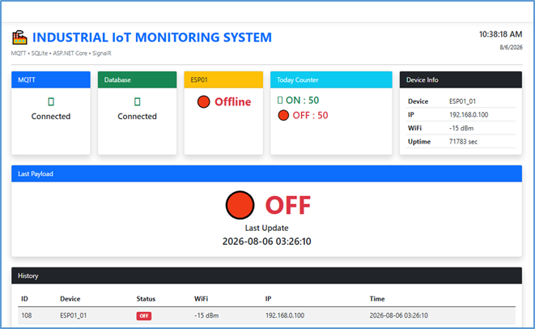
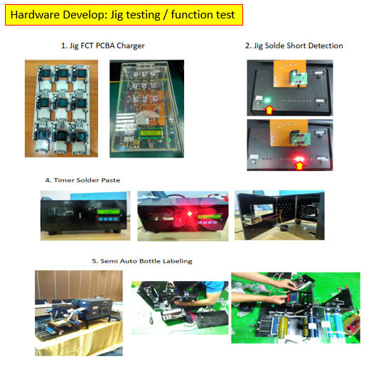
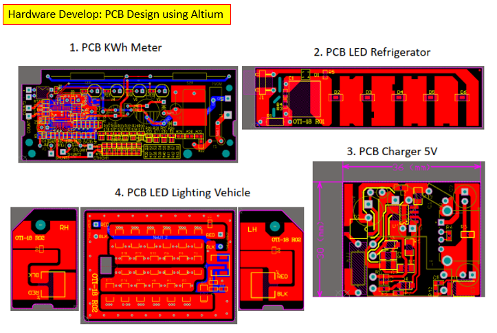
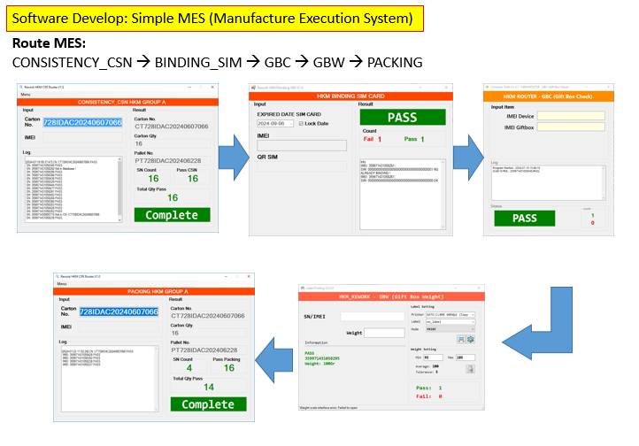

Software Engineer dengan pengalaman di manufaktur elektronik, MES, production support, electronic engineering, dan pengembangan IoT Machine Monitoring.
Saya memiliki pengalaman lebih dari 15 tahun di lingkungan manufaktur dan industri elektronik, dengan perjalanan karier mulai dari electronic hardware, R&D, quality analysis, production engineering hingga software development dan MES.
Saat ini fokus pada pengembangan sistem yang menghubungkan machine I/O, IoT devices, industrial data, database, dan realtime web dashboard untuk kebutuhan monitoring produksi.
Kombinasi pengalaman hardware, software, production dan troubleshooting menjadi dasar dalam pengembangan Prototype Machine Monitoring Berbasis IoT.
Develop software MES menggunakan Visual Basic, Oracle SQL/PLSQL, production tools dan document library. Mengelola label Giftbox, Carton Box dan Phone menggunakan CodeSoft. Support TRANSSION MES, Shop Floor, IMEI/MAC allocation, model change serta troubleshooting MES, software, label, printer dan weight checking.
Menangani customer claim, verification problem di production line, root cause analysis, A3 report dan final analysis report.
Design schematic dan PCB layout menggunakan Altium Designer, BOM, material/vendor, CAD data SMT, pre-production, testing, product analysis, customer/vendor communication dan functional test jig.
Analysis customer claim produk electronic speedometer, 5 Why, customer report dan monthly presentation.
Design hardware jig checker, schematic dan PCB Altium Designer, wiring block diagram, functional testing dan troubleshooting.
Design prototype hardware power supply, microcontroller, I/O dan display; design PCBA, assembly SMD/Through Hole, prototype evaluation, measurement report, troubleshooting dan product validation.
Prototype sistem monitoring mesin yang mengambil status machine I/O, mengirimkan data melalui WiFi dan MQTT, memproses serta menyimpan data, kemudian menampilkan informasi pada dashboard web secara realtime menggunakan ASP.NET Core dan SignalR.

Pengembangan dan support automation jig untuk membantu proses functional testing produk di production line. Sistem dirancang untuk mengontrol dan membaca I/O, menjalankan sequence pengujian, melakukan verification terhadap fungsi produk, serta menghasilkan keputusan PASS / FAIL secara konsisten.
Project ini menggabungkan pengalaman electronic engineering, hardware troubleshooting, production support, machine I/O dan automation untuk meningkatkan reliability dan efisiensi proses testing.

Perancangan hardware elektronik mulai dari schematic, PCB layout single layer dan multi layer, pembuatan BOM, persiapan data produksi, prototype assembly, testing dan troubleshooting. Berpengalaman menggunakan Altium Designer untuk pengembangan PCBA dan support proses engineering menuju produksi.

Pengembangan software sederhana untuk mendukung proses produksi dan traceability di manufacturing line. Sistem menghubungkan beberapa proses MES mulai dari consistency CSN, binding SIM, GBC, GBW hingga packing, dengan validasi data dan hasil proses secara bertahap.
Project ini menunjukkan pengalaman dalam pengembangan software production support, integrasi proses MES, validasi serial/IMEI, monitoring hasil PASS/FAIL, serta troubleshooting sistem di shop floor.

Training — 2008
Training — 2012
Quality Management System Training — 2017
Participation in Manual Hand Soldering Championship — 2019
Oscilloscope, LCR Meter, Function Generator, Multimeter, Gauge Meter dan Caliper.
Schematic, PCB layout, PCBA, prototype, testing, validation dan troubleshooting.